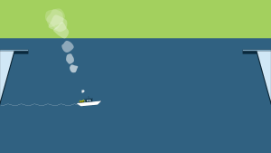
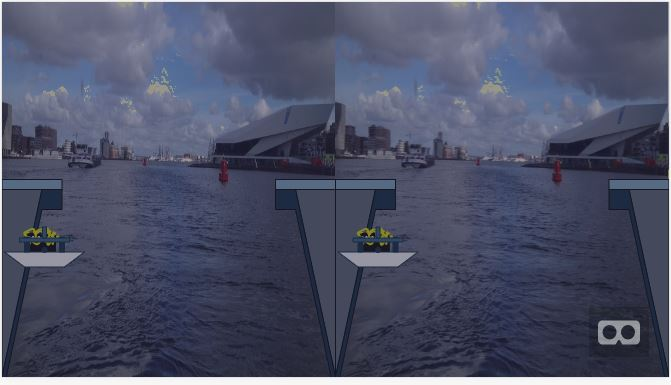
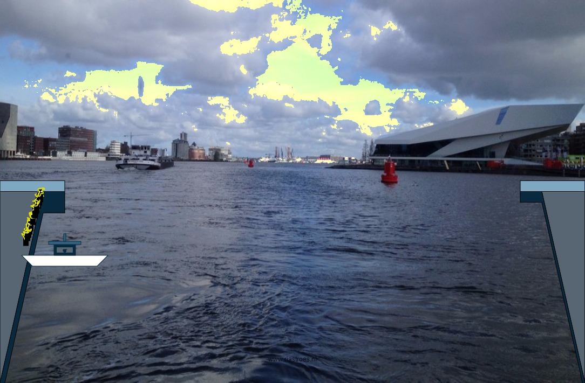

VR-Hacketon: 'De Pont'
An interactive film and game challenge. This event was a collaboration between Lava Lab, Creative Coding Amsterdam, SubmarineChannel & Amsterdam Creative Industries Network. The theme is Amsterdam Noord and the ferry that crosses the IJ. This hackathon is part of the project 'De Pont' You can find more information at: http://depont.submarinechannel.com/ Creative Coding Amsterdam organized several workshops this day. I participated one of them about A-Frame, A VR library for the web. The workshop lasted 5 minutes. Corin showed us the library homepage of A-Frame, where I found an example of a sphere, a triangle and a cubical, which you could move in a VR empty space. I already create a small P5 animation about a Ferry, that transported little creatures to the other side and back. Then I got an idea, what if ... I can create a mix of these two worlds; a 2D-animation and this VR example, both libraries where written in javascript. So I took the example with the sphere, that I could move up en down and put it behind my P5 sketch of the ferry. Now the sphere became a sun and when the sun hits the boot all the hairs of the creatures are exploding, but the Ferry doesn't care and goes on... back and forth ... back and forth... To my own big surprise it worked out well and on an Iphone or Ipad you can play this little game as you control the sun in VR-space and you can try to hit the boot with the sun. You can play this little game on riastroes.nl/VR
The second version. riastroes.nl/VR2
The third version: Ferry VR mp4
